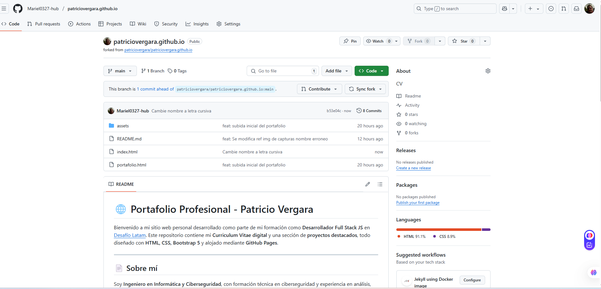
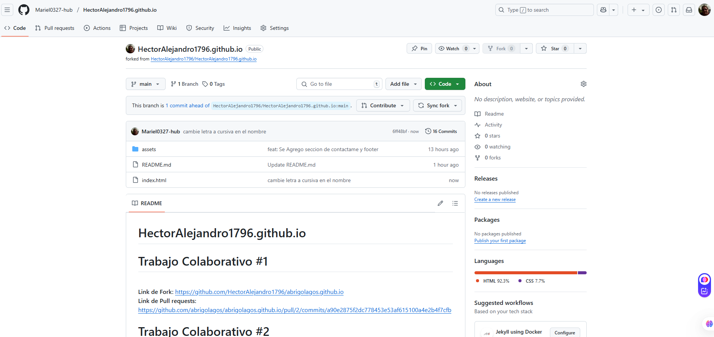
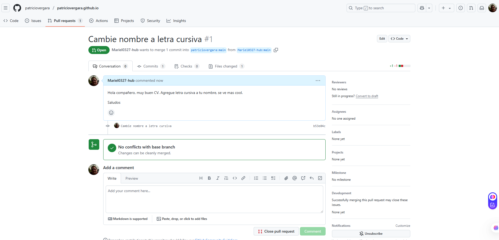
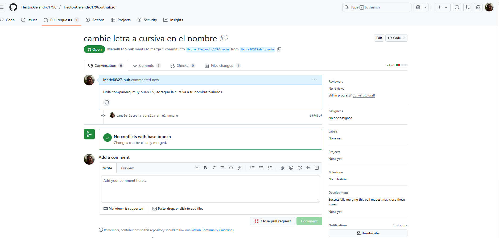

Documentación de Forks, Commits y Pull Requests
Commits
Commit al repositorio de Patricio Vergara
Se realizó un fork del repositorio patriciovergara/patriciovergara.github.io y se cambio la letra del nombre a cursiva, dandole un toque distintivo.
Commit del repositorio de Hector Alejandro
Se realizó un fork del repositorio HectorAlejandro1796/HectorAlejandro1796.github.io y se cambio la letra del nombre a cursiva modificando el estilo del nombre para enfatizar la distincion e importancia de la info.
Pull Requests
Pull Request al repositorio de Patricio Vergara
Se creó un Pull Request al repositorio original proponiendo el cambio de estilo en el nombre (letra cursiva).
Pull Request al repositorio de Hector Alejandro
Se creó un Pull Request al repositorio original de Hector agregando estilo cursivo al nombre.
